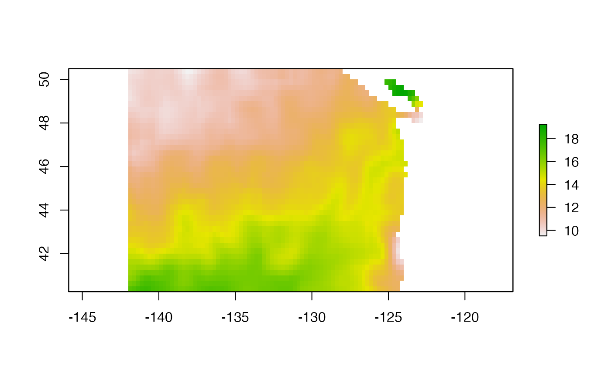
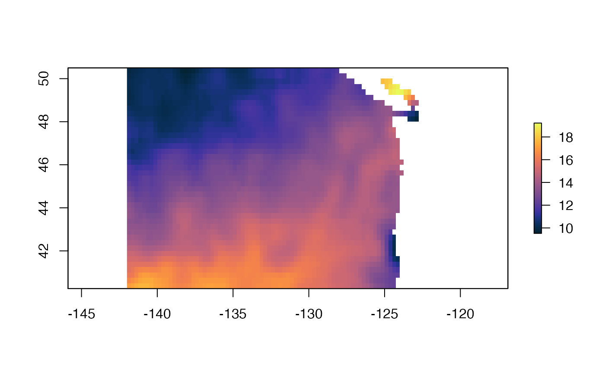
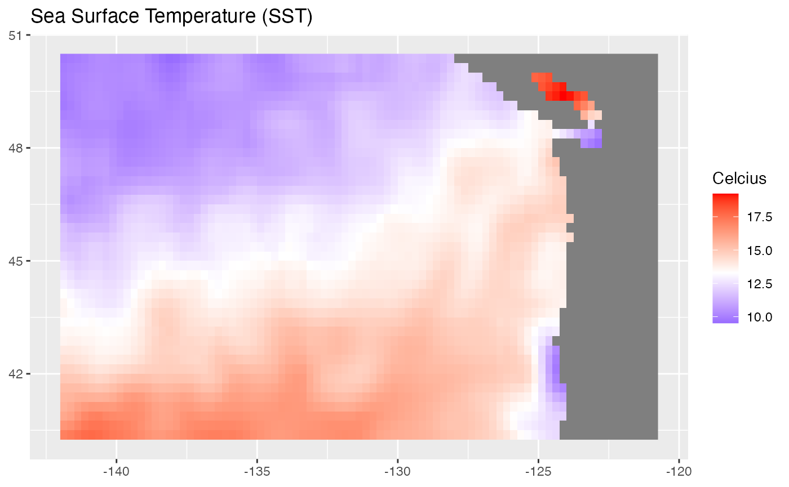
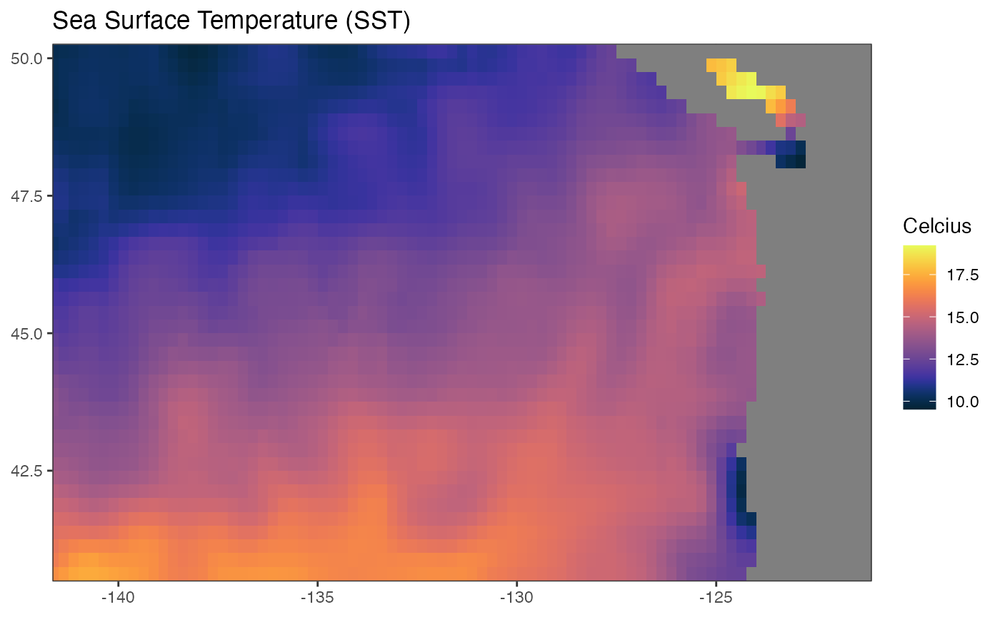
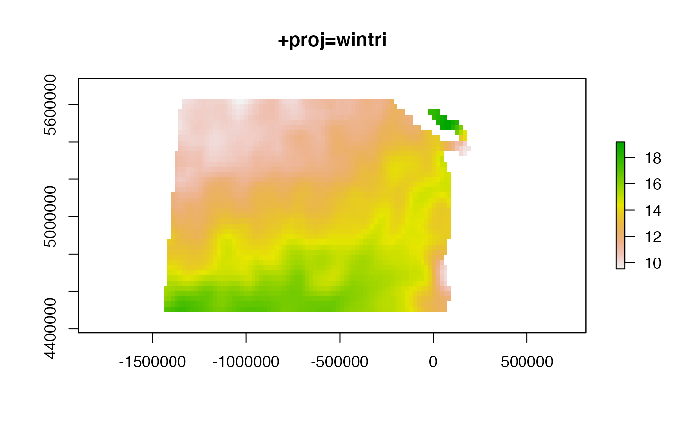

This will download data from the CoastWatch ERDDAP server. Alter the URL to download from a different ERDDAP server or data set.
require(devtools)
devtools::install_github("ropensci/rerddap")
devtools::install_github("rmendels/rerddapXtracto") Specify where to save the downloaded data. Data from a griddap() call can be verbose, so you’ll probably want a folder for it.
fil_dir <- file.path(here::here(), "inst", "extdata")
if(!dir.exists(fil_dir)) dir.create(fil_dir)We will download SST data from CoastWatch. Here is the data access page for that dataset.
lats <- c(40.375, 50.375)
lons <- c(-141.875, -120.875)
df_info <- rerddap::info("ncdcOisst21Agg_LonPM180")
df <- rerddap::griddap("ncdcOisst21Agg_LonPM180", latitude = lats, longitude = lons, time = c("2021-06-19", "2021-06-19"), fields = "sst")$datadf is a data frame with lat and lon.
head(df)## time lat lon zlev sst
## 1 2021-06-19T12:00:00Z 40.375 -141.875 0 17.10
## 2 2021-06-19T12:00:00Z 40.375 -141.625 0 17.25
## 3 2021-06-19T12:00:00Z 40.375 -141.375 0 17.45
## 4 2021-06-19T12:00:00Z 40.375 -141.125 0 17.62
## 5 2021-06-19T12:00:00Z 40.375 -140.875 0 17.68
## 6 2021-06-19T12:00:00Z 40.375 -140.625 0 17.61There is no projection information for these data, but the meta data just says that it is on a uniform lat-lon grid. That tells us that at minimum it is "+proj=longlat". It is important to include this information so that we can combine this with other map data later.
We can then turn this matrix into a raster using the raster package and the rasterFromXYZ() function.
df2 <- data.frame(x=df$lon, y=df$lat, z=df$sst)
ras <- raster::rasterFromXYZ(df2, crs = "+proj=longlat")We can do this with the raster package.
## Loading required package: sp
plot(ras) We can use the cmocean package and use its thermal palette.

We can plot with ggplot2 also.
## Loading required package: ggplot2
# Plot
gg <- ggplot(df) +
geom_raster(aes(lon, lat, fill = sst)) +
scale_fill_gradient2(midpoint = mean(df$sst, na.rm = TRUE),
low = "blue",
mid = "white",
high = "red") +
labs(x = NULL,
y = NULL,
fill = "Celcius",
title = "Sea Surface Temperature (SST)")
gg
It’s a bit ugly. We might futz with the look and use the cmocean palette.
gg + theme_bw() +
scale_x_continuous(limits = lons, expand = c(-0.01, -0.01)) +
scale_y_continuous(limits = lats, expand = c(-0.01, -0.01)) +
cmocean::scale_fill_cmocean(alpha=1) + theme_bw()## Scale for 'fill' is already present. Adding another scale for 'fill', which
## will replace the existing scale.## Warning: Removed 248 rows containing missing values (geom_raster).
The default raster plot is a bit deformed since it is long-lat on the x and y axis. We can see what it would look like in a different projection.
newcrs <- "+proj=wintri +lon_0=-125 +lat_1=46 +x_0=0 +y_0=0 +datum=WGS84 +units=m +no_defs"
ras_proj<- projectRaster(ras, crs=newcrs, over=TRUE)
plot(ras_proj)
title(stringr::str_sub(newcrs, 1, 12))